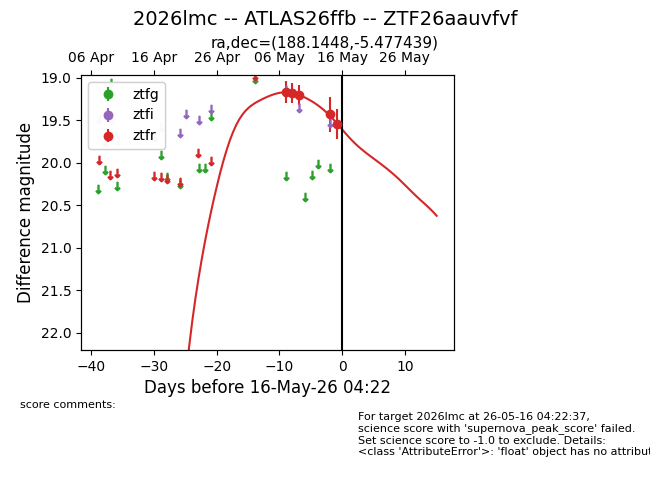
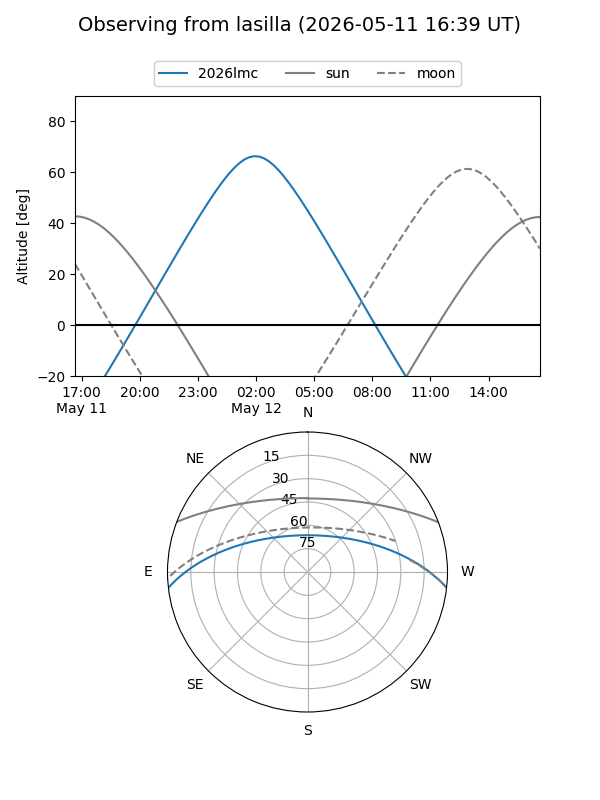
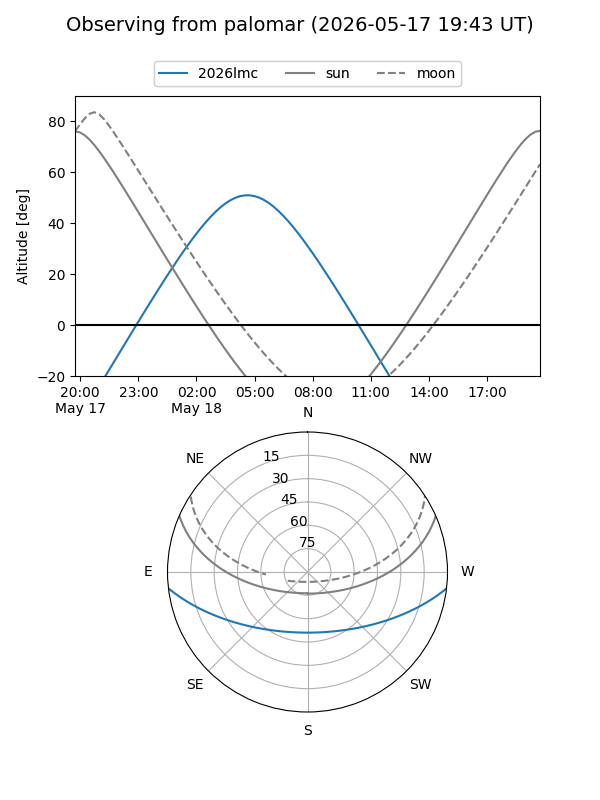
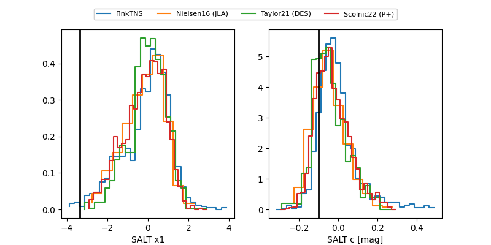

2026lmc
Target 2026lmc at 2026-05-16 04:24
Aliases and brokers:
FINK: link
Lasair: link
ALeRCE: link
TNS: link
YSE: link
alt names
ZTF26aauvfvf (ztf,fink_ztf)
2026lmc (tns,yse)
ATLAS26ffb (atlas)
Coordinates:
equatorial (ra, dec) = 188.1448,-5.47744
equatorial (HMS+DMS) = 12:32:34.75,-05:28:38.78
galactic (l, b) = (294.2739,+57.07694)
Flags:
Photometry:
last ztfr=19.54
5 ztfr detections
Lightcurve

Visibility


Additional plots
